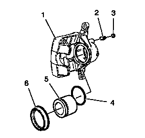
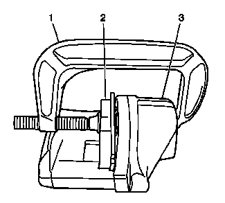

制动钳的的检查

1.
检查制动钳壳体(1) 是否开裂、严重磨损和/或损坏。如果有任何上述状况出现，则需更换制动钳。
2.
检查制动钳活塞防尘密封罩(6) 是否开裂、破裂、有切口、老化和/或未正确安装在制动钳体上。如果出现上述任何状况，则需要大修或更换制动钳。
3.
更新制动钳排气阀帽(3),若丢失。
4.
检查排气阀(2) 是否阻滞。

5.
检查制动钳活塞在制动钳孔中是否能平滑移动且完成行程：
制动钳活塞在制动钳孔中的移动应平滑且均匀。如果制动钳活塞卡住或难以移动到底，则需要大修或更换制动钳。
将报废的内侧制动片(2)或木块插到活塞前部。将一个大型的C形夹钳(1) 安装在制动钳(3) 上并抵住制动片或木块，然后使活塞在制动钳孔内缓慢地移动到底部。